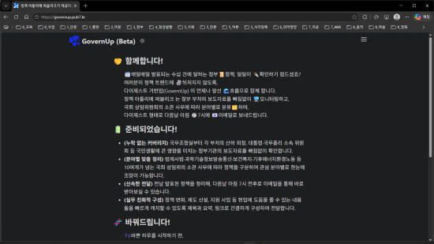
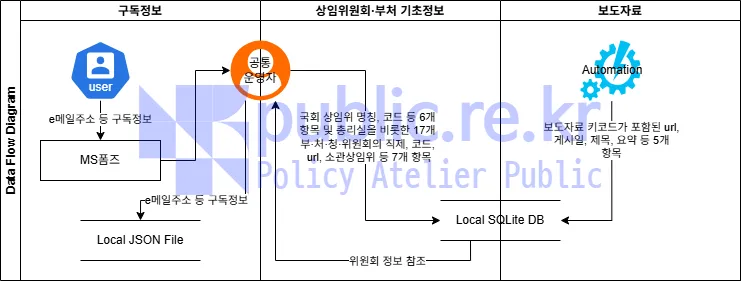
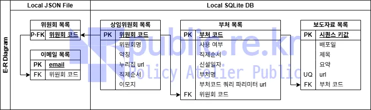
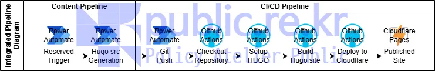
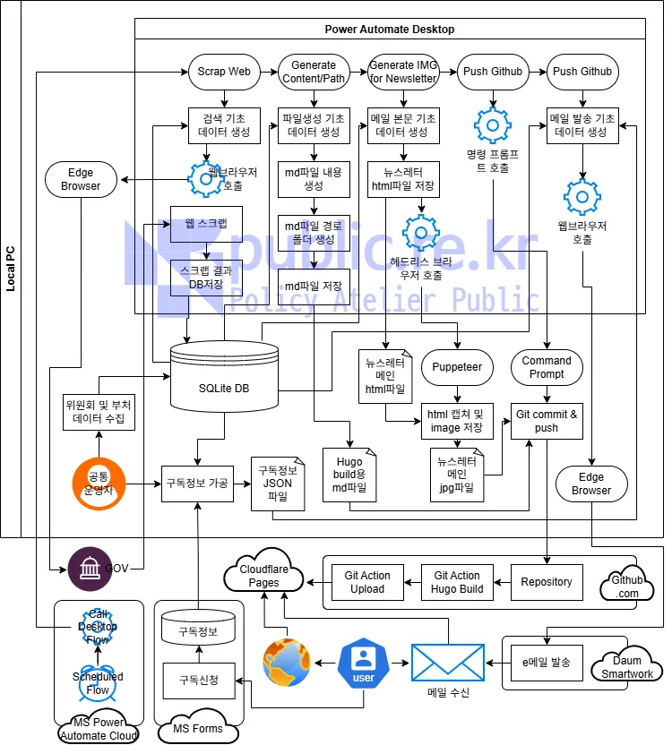

일일 공공 정책 요약 서비스 거번업(GovernUp) 구축 결과

1. 추진근거
2. 추진개요
- 추진기간: 2026. 1. ~ 2025. 5. (5개월)
- 인력투입: 행정전문가(일반행정사) 0.25인 / 초급기술자(정보처리기사) 0.75인
- 개발인프라
- (DB) SQLite (Public Domain)
- (Automation Engine) MS Power Automate Cloud(SaaS) & Desktop(On-premises) (free for a limited time)
- (Web Builder) Hugo Extended (Apache License 2.0)
- (VCS) Git (GPLv2) & Github.com (Free tier SaaS)
- (CI/CD) Github Actions
- (Web Hosting) Cloudflare Pages (Free tier SaaS)
- (ETC) MS Forms(Free tier SaaS), Daum Smartwork(Free tier SaaS), Puppeteer(Apache License 2.0)
- 주요내용: 정부 부처별 보도자료를 신속하게 확보하고, 분야 및 날짜별로 제공하는 웹사이트를 구축하여, 공공정책 정보를 필요로 하는 수요자에게 매일 Email로 제공하는 자동화 서비스 구축
3. 범주화 및 그룹화 결과
3.1. 범주화
- 일일 루틴을 통해 자료 수집이 수행되고 있어 일 단위 범주화 합리성 충족
- 디렉터리 구조 또한 연·월로 관리하도록 설계
3.2. 그룹화
- (중앙행정기관 현황) 2026. 1월 기준 국무총리실과 국가 행정사무를 담당하는 중앙행정기관 총 55개소
- 국무조정실(국무총리비서실은 정책업무를 수행하지 않아 제외)
- 총리직속 6개 처
- 19개 부
- 18개 외청
- 독립된 중앙행정기관으로서 7개 위원회
- 대통령 자문 및 심의 기구로서 4개 위원회
- (그룹화 기준) 국회법 제37조(상임위원회와 그 소관)
- 55개 기관이 생산하는 정책 자료의 효율적 제공을 위한 정책적 기준 고려
- 국회법 제37조에 근거한 17개 분야로 그룹화하고, 이 기준에 따라 섹션 구분 및 뉴스레터 서비스 제공
분야명 위원회약칭 소관부처 국회운영 운영위 국회, 대통령비서실, 국가안보실, 대통령경호처, 인권위 법제사법 법사위 법무부, 대검, 법제처, 감사원, 헌재, 법원, 군법원, 탄핵소추, 법률안심사 정무 정무위 국무총리, 국가보훈부, 공정위, 금융위, 권익위 재정경제기획 기재위 재정경제부, 국세청, 관세청, 조달청, 기획예산처, 국가데이터처, 한국은행 교육 교육위 교육부, 국가교육위원회 과학기술정보방송통신 과방위 과학기술정보통신부, 우주항공청, 방미통위, 원안위 외교통일 외통위 외교부, 재외동포청, 통일부, 민주평통 국방 국방위 국방부, 병무청, 방위사업청 행정안전 행안위 행정안전부, 경찰청, 소방청, 인사혁신처, 중선관위, 지방자치단체 문화체육관광 문체위 문화체육관광부, 국가유산청 농림축산식품해양수산 농해수위 농림축산식품부, 농촌진흥청, 산림청, 해양수산부, 해양경찰청 산업통상자원중소벤처기업 산자중기위 산업통상부, 중소벤처기업부, 지식재산처 보건복지 복지위 보건복지부, 질병관리청, 식품의약품안전처 기후에너지환경노동 기후노동위 기후에너지환경부, 기상청 및 고용노동부 국토교통 국토위 국토교통부, 행정중심복합도시건설청, 새만금개발청 정보 정보위 국가정보원 성평등가족 성평등위 성평등가족부
4. 시스템 설계 결과
4.1. 데이터 흐름도

4.2. 개체 관계도

4.3. 통합 파이프라인 흐름도

4.4. 시스템 아키텍처 다이어그램

5. 기술 리서치
- DB 연결을 위한 Windows ODBC 구성
- Sqlite DB 쿼리문 예시
- 마이크로소프트 entra 계정 관리 및 MFA 설정
- Power Automate Cloud 사용을 위한 설정
- Power Automate 및 hugo 활용 자동화 설정
- Hugo 정적웹사이트 생성기에 탐색경로 기능 추가
- hugo 프레임워크 기반 웹사이트에 오버레이 메뉴 추가
- 브라우저 자동화 라이브러리 Puppeteer 설치
- GitHub Actions를 이용한 CI/CD 파이프라인 구축 가이드
- 시스템 아키택쳐를 위한 다이어그램 요약
6. 주요성과 및 시사점
6.1. 총평
-